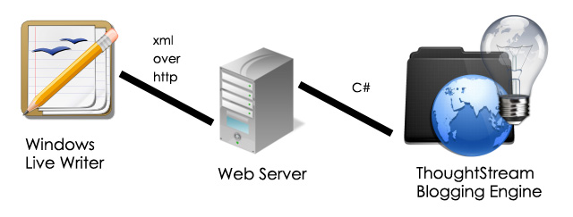
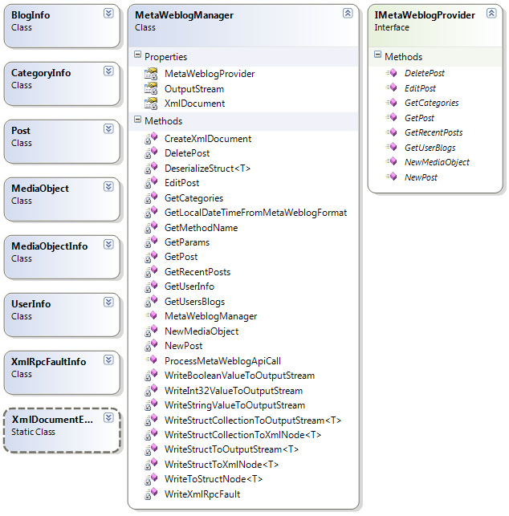

When I started down the path of writing the Orion engine (a high performance blogging engine written in Quartz for ASP.NET), which is what drives this website, I wanted to be able to use Windows Live Writer to write my blog posts and so that need sent be down this path and so here we are.
Open Source Project - ooMetaWeblog
I've published this library as an open source project on CodePlex. The project page is at: ooMetaWeblog
Windows Live Writer
If you've got a blog, you should look at using Windows Live Writer and your blog writer/editor, there is nothing like it out there. It's very much like Microsoft Word and it is complete tailor made for blog writing, and for the kind of blog writing I do, which includes a lot of images and code snippets, it's perfect since there is a plug-in available for converting code from your VS.NET editor into html including all of the color highlighting etc.
Windows Live Writer supports a number of blog writing/editing APIs and so I decided to implement one of those APIs for ThoughtStream so I didn't have to write and screen for the same (at least not right off the bat). And that's where the MataWeblog API comes in.
MetaWeblog API
The MetaWeblog API is a well known API for writing and editing blog posts. There are many blog writers that support this API. It's not the best (read that as most complete) API for blog writing/editing but I've chose it after a lot of thought and debate. None of the APIs have good documentation so I went with the one API that almost all other APIs are based on.
Personally I'm surprised that in this day and age there is no "real" blogging API. I've looked at the WordPress blogging API and even though it handles a few more things as compared to the MetaWeblog API (and Live Writer supports the WordPress API as well) it's really not a well thought out API. In fact none of the API are well thought out.

Since documentation is sparse and I've seen a lot of people struggling with implementing this API, I've decided to make the library I've developed available to the public. I've use this library for my blog along with Windows Live Writer so I know it is tests and works as expected.
MetaWeblog C# Library
The first thing you want to look at are all the methods that are available in the API and their signatures. Take a look at code listing 1 below. The IMetaWeblogProvider interface has a bunch of methods as you can see.
This is the interface you will need to implement in blog your blogging engine in order to make it compliant with the MetaWeblog API, so you can use a blog writer such as Window Live Writer to write your blog posts.
You'll notice that the interface is completely decoupled from any http or xml nuance that is part of the MetaWeblog API. This was by design so as to make testing your implementation of this interface a lot simpler.
IMetaWeblogProvider.cs
using System; using System.Collections.Generic; using System.Linq; using System.Web; namespace Matlus.MetaWeblog { public interface IMetaWeblogProvider { BlogInfo[] GetUserBlogs(string appkey, string userName, string password); Post[] GetRecentPosts(string userName, string password, string blogid, int noOfPosts); CategoryInfo[] GetCategories(string userName, string password); int NewPost(string userName, string password, string blogid, Post post); void EditPost(string userName, string password, Post post); Post GetPost(string userName, string password, int postid); void DeletePost(string userName, string password, int postid); MediaObjectInfo NewMediaObject(string userName, string password, MediaObject mediaObject); } }
Code Listing 1
Once you have the implementation of this interface functioning as you expect it to, getting it to work with Windows Live Writer or any other blog writer that supports the MetaWeblog API is quite simple. I do strongly suggest implementing this interface and testing it thoroughly before using the MetaWeblogManager class.
Now lets just take a brief look at the various other classes that are part of the library. Below is the class diagram of the complete MetaWeblog API library that's available for download. All of the heavy lifting is done by the MetaWeblogManager class. This class talks the MetaWeblog API language (which is essentially xml over http) and translates all of the communication into simple C# method calls. So you don't really have to mess with anything but your own implementation of the IMetaWeblogProvider interface. All of the other classes are supporting classes. The classes you see going down the left hand side are classes that will shuttle data between the MetaWeblogManager and your implementation of the IMetaWeblogProvider. They are simple DTOs and have no methods, just properties.

MetaWeblogManager
Now, let's take a look at the MetaWeblogManager class in code listing 2 below. Once again you'll notice that this class really only works with a System.IO.Stream. This design decouples this class from any "web" stuff per se. Of course the Stream must contain the correct content (the xml content as per the API specification - you don't really have to worry about the xml aspect since the library handles that for you) but you're free to decide how exactly you'll provide it with this stream. The simplest way is to use this class from within an IHttpHandler, but you're not confined to this. It could be a WCF service or a regular ASP.NET web page.
I'm only listing the ProcessMetaWeblogApiCall method, which is the entry point of this class. This method calls into other methods within the class that do the translation from xml to regular C# (and back) and then call the appropriate methods in the IMetaWeblogProvider interface.
MetaWeblogManager.cs
public void ProcessMetaWeblogApiCall(Stream inputStream, Stream outputStream) { XmlDocument = new XmlDocument(); XmlDocument.Load(inputStream); OutputStream = outputStream; var methodName = GetMethodName(); try { switch (methodName) { case "blogger.getUsersBlogs": GetUsersBlogs(); break; case "metaWeblog.getCategories": case "wp.getCategories": GetCategories(); break; case "metaWeblog.getRecentPosts": GetRecentPosts(); break; case "metaWeblog.newPost": NewPost(); break; case "metaWeblog.editPost": EditPost(); break; case "metaWeblog.getPost": GetPost(); break; case "blogger.deletePost": DeletePost(); break; case "metaWeblog.newMediaObject": NewMediaObject(); break; case "blogger.getUserInfo": GetUserInfo(); break; } } catch (Exception e) { WriteXmlRpcFault(e, outputStream); } }
Code Listing 2: Showing the ProcessMetaWeblogApiCall method
The Complete Setup
Of course in order to get Window Live Writer or any other blog writer to work against your blogging engine, you'll need to go all the way out to Http and that translates to an IHttpHandler or something similar. I've use a Builder (part of the Quartz for ASP.NET framework) as my point of entry into the Orion blog engine, but I'll show an implementation of an IHttpHandler. The handler is really very simple as you can see in code listing 3 below.
The MetaWeblogManager class expects an instance of a class that implements the IMetaWeblogProvider interface. In my case, my BusinessModule class is the class that implements this interface.
You'll need to register your handler like you would any other handler in ASP.NET.
An HttpHandler using the MetaWeblogManager class
using System; using System.Collections.Generic; using System.Linq; using System.Web; using System.IO; using System.Xml.Linq; using System.Xml; using Matlus.MetaWeblog; namespace Orion.WebLib { public class XmlRpcHandler : HandlerBase { public override bool IsReusable { get { return true; } } public override void ProcessRequest(HttpContext context) { var metaWeblogManager = new MetaWeblogManager(BusinessModule); metaWeblogManager.ProcessMetaWeblogApiCall(HttpContext.Current.Request.InputStream, HttpContext.Current.Response.OutputStream); } } }
Code Listing 3: The IHttpHandler that instantiates the MetaWeblogManager
This brings us to the end of this post. You can download the library from the link below.
The download contains the complete source to the library. I'm using .NET 4.0 and I don't believe I'm using any .NET 4.0 specific features so you should be able to compile the library for .NET 3.5 if need be.